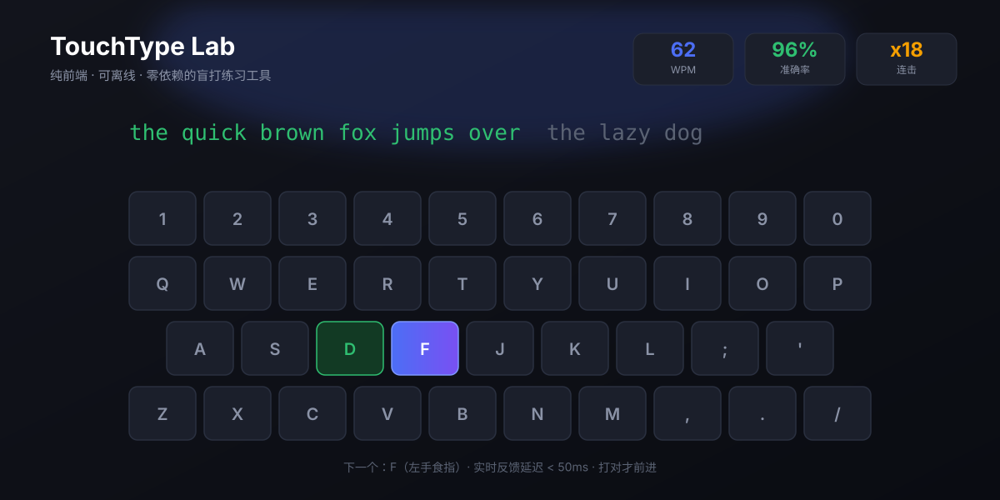

TouchType Lab · 盲打练习网站
2026纯前端 · 可离线 · 零依赖
我自己想练盲打，就先造了个工具。从标准指法图谱到自适应难度，全部自己实现。
- 9 阶段渐进课程：基准行 → 上排 → 下排 → 数字符号 → 单词 → 句子 → 长文 → 代码 → 中文
- 实时指法纠正：击键延迟 < 50ms，下一个应击键与对应手指即时高亮；练习模式必须打对才前进
- 自适应难度：依据最佳速度与近期准确率推算，每次最多提升 1 级，避免跳跃
- 数据可视化：WPM / 准确率趋势曲线 + 按键级正确率热力图，用数据回答"我哪个键最常错"
- 无障碍：色盲友好配色、高对比度、全键盘导航；数据存 localStorage，断网也能练